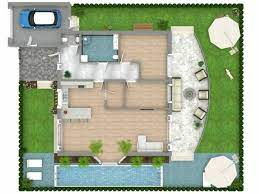

About Farmhouse Retreat
Farmhouse Retreat is a serene escape nestled amidst lush greenery and tranquil surroundings. It offers a perfect getaway from the hustle and bustle of city life, allowing you to reconnect with nature and rejuvenate your senses.
Farmhouse Layout

Location
Features of Farmhouse Retreat
- Pictures views of rolling hills and lush landscapes
- Cozy and rustic farmhouse accommodations
- Organic farm-to-table dining experience
- Tranquil walking trails and nature hikes
- Outdoor recreational activities including fishing, bonfires, and stargazing